安全数字存内计算宏零基础精讲：让 CIM 也学会“保守秘密” Digital In-Memory Compute for Machine Learning Applications With Input and Model Security（IEEE JSSC, vol.60, no.9, 2025）
前十几篇论文都在卷“能效”。这篇 MIT + IBM 的工作把视角转向另一个常被忽视的维度：安全。ML 加速器处理人脸/语音等隐私输入，模型权重是私有 IP——但传统数字 IMC 的功耗会泄露数据（侧信道），片外权重总线可以被窃听（总线探测）。本论文提出一个安全数字 IMC 宏，用三招同时防住两类攻击：
- SCA 安全计算：用 Boolean 共享（每个比特拆成 3 份看似随机的共享）让电路功耗与真实数据无关；关键是乘法用原生安全的 XNOR 门（线性逻辑）替代 AND——每份可独立计算、天然均匀、抗毛刺 → 运行期零随机比特（IMC 百万并行 MAC 下这是唯一可行的路线）；
- BPA 安全：片外权重以密文存储，用 NIST 轻量密码竞赛冠军 ASCON 在片上解密——轻量、AND 门占比最低（共享开销最小）、SCA 弹性好；
- 片上密钥：用 PUF（物理不可克隆函数）复用 IMC 的 SRAM 单元（反馈切断）生成密钥——制造随机性即芯片指纹，密钥永不离开芯片。
14nm 实测：8.1 TOPS/W、NN 精度零影响、SCA/BPA 安全超过 100 万采样（高 SNR 理想攻击条件下）。
- “功耗是数据的影子”：CMOS 电路处理 0 和 1 消耗的电流不同，测量功耗就能反推数据。侧信道攻击（SCA）就是利用这个物理事实。防御思路：让电路的功耗与真实数据统计无关。
- “IMC 安全的最大敌人是随机比特”：传统掩码方案每周期要注入新随机比特。IMC 每周期并行百万个 MAC，若每个都要随机比特，随机数生成的开销反超计算。所以任何 IMC 安全方案必须“运行期零随机比特”——这是本论文所有设计的硬约束。
- “密钥必须长在芯片里”：密码解密需要密钥，但密钥若从片外传入就会被探测。PUF 利用制造工艺的随机失配（每颗芯片都不同、且无法复制）在芯片内部“长”出密钥——像指纹一样独一无二。
§0.1摘要逐句精读
| 原文（摘录） | 人话解释 |
|---|---|
| “one often overlooked parameter is security, which is necessary to maintain the privacy and integrity of the accelerator” | 安全常被忽视，但它是维持加速器隐私与完整性的必要条件。 |
| “we propose an IMC macro design that is protected against two types of eavesdropping attacks, passive physical side-channels and memory bus-probing” | 本论文的 IMC 宏同时防两类窃听攻击：物理侧信道（SCA）与总线探测（BPA）。 |
| “secure compute that eliminates the need for random bits” | 对策①：安全计算消除了对（运行期）随机比特的需求。 |
| “local model decryption with a lightweight cipher” | 对策②：用轻量密码在本地（片上）解密模型。 |
| “secret key generation reusing existing IMC circuitry” | 对策③：复用现有 IMC 电路生成秘密密钥（PUF）。 |
| “provide side-channel security against all practical attackers beyond 1 million samples” | 对超过 100 万采样的所有实际攻击者都提供侧信道安全。 |
| “still operating without any effect on neural network accuracy at 8.1 TOPS/W energy efficiency” | NN 精度零影响，能效 8.1 TOPS/W。 |
§0.2论文的核心贡献清单
- SCA 安全计算（Boolean 共享 + XNOR 乘法）：3 份共享一阶安全；XNOR 线性乘法每份独立、免随机比特（AND 需 48 门+2 随机比特/周期，XNOR 只需 6 门+0）；SV/BV 换算 + 校正因子保持多位 MAC 精度（表 I：奇数量化 vs 标准量化精度一致）；
- 安全加法树/累加器：进位保存加法（免半加器→免随机刷新）、近似均匀性（CV 0.44→0.01）、MSB 首拍用“复用式随机 0 共享”（仅启动一次性随机比特）；
- BPA 安全（ASCON）：NIST 轻量密码冠军、TI-ASCON 用 "Changing of the Guards"（仅 4 个一次性随机比特）、SCA 弹性好；
- 片上密钥（SRAM PUF）：反馈切断复用 IMC 位单元、TMV 抗噪 + 差分 FSM 抗简单功耗分析、NIST 随机性全过、0% 误码（TMV+BCH）；
- 完整实测：CPA/DPA 超 100 万采样安全、8.1 TOPS/W、开销量化（位单元 ×5.3、加法树 ×15.5）与可扩展性讨论。
完全零基础：按 01→09 顺序读，重点玩 3 个交互仿真、看 3 个视频，约 60 分钟。这篇是“安全与电路设计结合”的入门佳作：先建立威胁模型（§1），再理解 Boolean 共享的数学（§2），然后看三招怎么落地（§3–6），最后看怎么用 CPA/DPA 证明安全（§7）。读时注意：每个设计决策都在回答“怎么省掉随机比特”。
§1背景：ML 加速器的安全威胁
零基础读者看完本节后应能回答：① 侧信道攻击（SCA）和总线探测攻击（BPA）分别怎么工作？② 权重泄露会带来哪些后果？③ 本论文的威胁模型假设攻击者能做什么、不能做什么？
1.1 ML 加速器里有什么值得保护的？
- 输入激活 = 用户隐私：IoT 设备收集的人脸图像、语音录音等私密数据在加速器上处理——不应泄露给不可信实体；
- 模型权重 = 私有 IP 与安全基石：① 权重用私有训练集训练 → 知道权重可能反推训练数据；② 知道权重 → RowHammer 等定向对抗攻击影响计算完整性；③ 训练模型耗费大量人力机时 → 是竞争优势，必须作为私有 IP 保护。
1.2 攻击①：物理侧信道攻击（SCA）
CMOS 电路的电流消耗与正在处理的数据直接相关——这是物理定律，无法通过软件修复。两种典型方式：
- 功耗 SCA：在电源轨上串分流电阻，测量电压降获得功耗轨迹；
- 电磁（EM）SCA：用探针非侵入地测量空间分布电流产生的 EM 场。
攻击者收集多条侧信道轨迹后，用相关功耗分析（CPA）或模板攻击被动预测正在处理的数据。本文假设攻击者采样数受“被发现”限制（实用数量级，非无限）。
1.3 攻击②：总线探测攻击（BPA）
标准模型太大，无法全部存片上 → 推理时权重从片外存储器逐批加载：
- 传统封装：数据走 PCB 裸露走线 → 攻击者可轻易搭线读出整个模型（收集数字权重和偏置就能重构整个神经网络结构）；
- 片外 NVM：冷启动攻击能在设备断电后恢复数据。
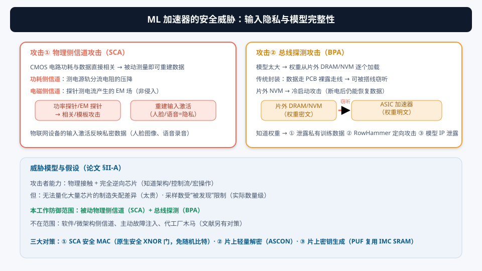
1.4 威胁模型（论文 §II-A）
- 物理接触设备；
- 对芯片做完全逆向工程（知道架构、控制流、宏操作，一直到晶体管级）；
- 收集“实用数量级”的侧信道采样（超过会被发现）；
- 但：量化大量芯片的制造失配差异太贵（攻击者无法精确知道每颗芯片的随机失配）。
软件/微架构侧信道、主动故障注入、代工厂木马插入——这些可用文献中的平行防护解决，本文不重复。
1.5 为什么现有方案不适用于 IMC？
- 掩码/均衡方案 [30][31]：阈值实现（TI）需每周期恒定随机比特；[31] 需随机序列生成器做洗牌——都不适合 IMC；
- IMC 的硬约束：每周期并行数千到数百万 MAC，每个 MAC 若只要几个随机比特，PRNG 开销就反超计算 → 必须消除运行期新鲜随机比特；
- BPA 方案 [32]：位单元存值+反相实现低开销 XOR 密码，但密钥复用有安全漏洞 → 需要与整个模型等长的密钥，不现实。
① SCA 用功耗/EM 泄露数据，BPA 用总线窃听泄露模型；② 权重泄露 → 反推训练数据、RowHammer 攻击、IP 泄露；③ 攻击者能完全逆向芯片但无法量化制造失配；④ IMC 安全方案必须“运行期零随机比特”——这是贯穿全篇的设计约束。
§2安全基础：Boolean 共享与阈值实现
理解：① 3 份 Boolean 共享怎么让功耗不泄露数据；② 阈值实现（TI）的三条性质（正确性/非完备性/均匀性）；③ 为什么 AND 门是难点、均匀性为什么需要刷新。
2.1 Boolean 共享：把秘密拆成看似随机的份
类似密码学多方计算：n 方分信息，至少 x 方串通才能恢复。用 Boolean 掩码时，每个数字比特拆成 n 份，所有份一起（XOR）才恢复原值：
b = b1 ⊕ b2 ⊕ b3
- 单独观察任何一份都看似随机（与 b 无关）；
- 每个逻辑函数也拆成子函数，每个子函数只操作输入份的严格子集 → 任何子电路都碰不到完整秘密；
- 结果：整个电路的功耗与真实数据无关。
本论文用 3 份共享实现一阶安全（攻击者被限制为一阶攻击，无法收集高阶攻击所需数据——这对并行度极高的 IMC 尤其合适）。需要更高阶安全时可扩展更多份。
2.2 阈值实现（TI）的三条性质
一种特殊的 Boolean 共享——TI——提供可证明的多阶 SCA 安全，但开销大。对函数 t = F(b,c) 的共享 (t1,t2,t3) = Fsh((b1,b2,b3),(c1,c2,c3))，要求：
| 性质 | 含义 |
|---|---|
| 正确性 | 若 b=b1⊕b2⊕b3、c=c1⊕c2⊕c3，则 t=t1⊕t2⊕t3（共享计算恢复正确结果） |
| 非完备性 | 每个子函数 Fj 只用输入份的严格子集 → 任何子电路都不含完整秘密 |
| 均匀性 | 任意非共享输入下共享表示分布均匀 → 只有非共享值分布的偏差会贡献到共享版偏差 |
2.3 难点：AND 门不满足均匀性
像 AND 这样的常见函数，在最小共享数下输入均匀但输出不均匀。两个常规解法都贵：
- 加共享数：电路大幅膨胀；
- 输出刷新：用独立随机比特重新生成均匀输入 → 每周期都要随机比特。
对 IMC 的百万并行 MAC，这两条路都走不通。本论文用放宽的均匀性要求（近似均匀）配合原生安全的线性 XNOR 门解决——这正是下一节的核心。
IMC 有大量并行操作、权重/激活互不相关 → 攻击者信噪比（SNR）比传统加速器更低。计算性（而非数学性）的均匀性就足够：实际攻击采样有限，微小偏差不会导致信息泄露。
§3创新①：用原生安全的 XNOR 门做乘法
理解：① AND 乘法共享后为什么贵（48 门 + 2 随机比特）；② XNOR 是线性逻辑 → 共享后天然安全（6 门 + 0 随机比特）；③ 怎么用 XNOR（±1 乘法）算多位 MAC 而不失精度（SV/BV 换算 + 校正因子）。
3.1 问题：AND 乘法的共享成本（论文 Fig.2）
传统位串行数字 IMC 用 AND/NOR 门做 1-bit 乘法。AND 是非线性逻辑 → 共享后：
- 激活和权重的每份乘法不能独立进行；
- 需要随机比特 remask 或更多输入共享来维持均匀性；
- 需要输出寄存器维持非完备性和抗毛刺。
标准 TI 形式的每个 AND 1-bit 乘法器需要 48 个门等效 + 每周期 2 个随机比特——对 IMC 的百万并行 MAC 完全不可扩展。
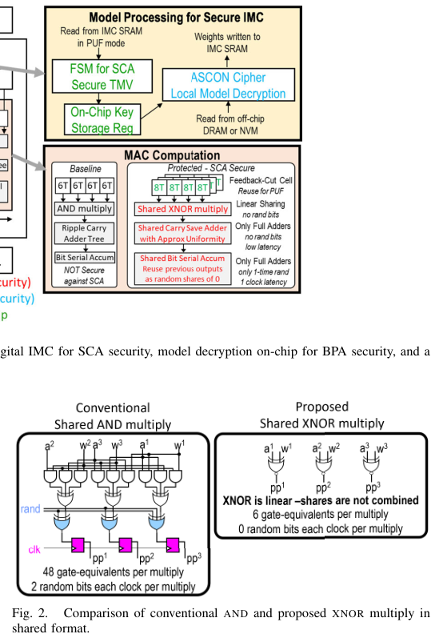
3.2 方案：原生安全的线性 XNOR 门
XNOR（=反相的 XOR）是线性逻辑：
- 每份可独立计算（线性运算在共享上的分配律）；
- 天然保持均匀性与抗毛刺 → 无需随机比特、无需输出寄存器；
- 标准 4 晶体管传输门实现 XOR，加权重输入反相器平衡 SRAM 位单元负载（为 PUF 操作准备）→ 每个乘法 6 个门等效、0 随机比特。
这就是“原生安全”的含义：XNOR 门本身在共享格式下就是安全的，不需要任何附加保护。对 IMC 这种并行度极高的结构，这是唯一的可行路线。
3.3 但 XNOR 是 ±1 乘法，怎么算多位 MAC？
XNOR 乘法对应二值神经网络（BNN）的 +1/−1 乘法。直接替换 AND 会导致算术错误。本论文的解法（类似 [7]）：
- 有符号值（SV）：每个有符号值写成二进制加权 +1/−1 的和，SV = Σ 2ⁱ × (−1)^(1−bᵢ)（只取奇数值：±1、±3、±5…）；
- 二进制值（BV）：计算用的表示，从全 0（最小负）到全 1（最大正）；换算 SV = 2·BV − (2ⁿ−1)；
- 范围翻倍：SV 虽只取奇数，但 4 位可存 −15~15（原本 −8~7）→ 网络可重训，预期无精度损失（表 I 验证：奇数量化 vs 标准量化精度一致）；
- 校正因子（论文式 8）：SVout = 2 × BVout − (2ⁿᵂ−1)(2ⁿᴬ−1)·r —— 校正项只依赖位宽和输入数 r，可片外预计算。
无符号激活（ReLU 输出）+ 有符号权重时，校正因子 = BVout − 常数 + Σ权重项（权重和也随激活不变，可预计算存储）。
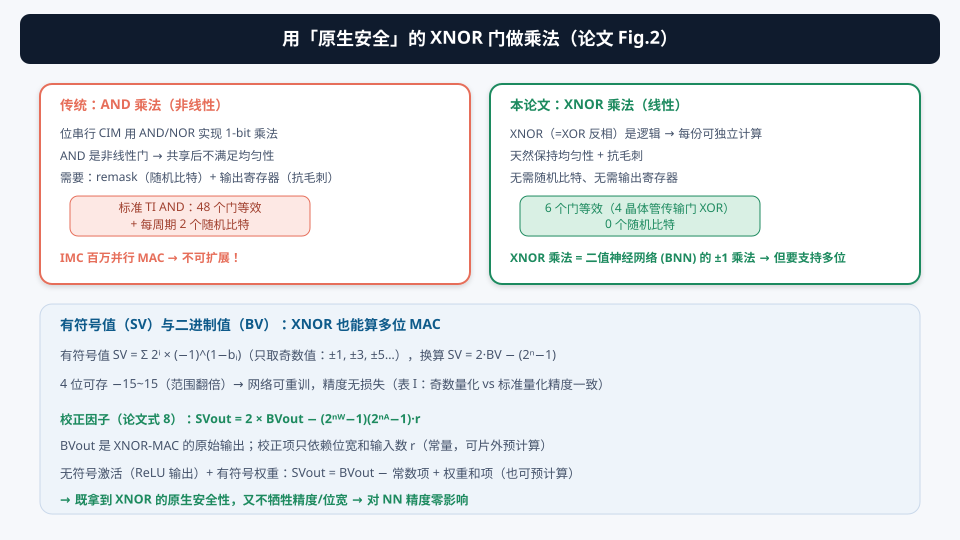
① AND 乘法共享后 48 门+2 随机比特/周期 → IMC 不可扩展；② XNOR 线性 → 6 门+0 随机比特，原生安全；③ SV/BV 换算 + 常数校正因子让 XNOR（±1 乘法）也能做多位 MAC，精度零影响（表 I）。
§4安全加法树与位串行累加器
理解：① 为什么用进位保存加法（免半加器→免随机刷新）；② 近似均匀性怎么从 CV=0.44 降到 0.01；③ MSB 首拍的“随机 0 共享”怎么只用一次性随机比特。
4.1 加法树：进位保存（CSA）替代行波进位（论文 Fig.3）
XNOR 乘法后，各行的部分积用标准数字加法合并。传统数字 IMC 用行波进位加法树。本论文的安全版本：
- 半加器的问题：半加器用 AND 门 → 共享后不天然均匀 → 需要随机比特刷新 → 必须避免；
- 进位保存（CSA）：进位不在同一次加法内传播 → 延迟低；且每 3 个操作数合并 → 只用全加器（其进位共享是天然均匀的）、无需半加器；
- 和的计算是线性的（每份独立算），但每输出需寄存器（与进位同步时序 + 非完备性要求）；
- 延迟优化：砍掉加法树最后两级流水，部分和留在“修改版进位保存格式”（某些位位置 1 或 3 位信息）→ 最后几次加法并入位串行累加器完成。
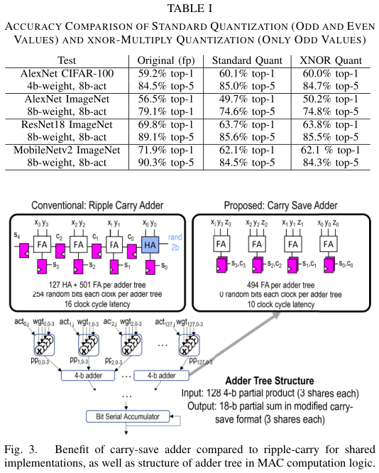
4.2 近似均匀性（论文 Fig.4）
全加器的和/进位输出不联合均匀，但：
- 和与进位指向不同位位置 → 不会直接合并；
- 任一输出在重新合并前至少经过另一级加法器 → 中间逻辑混合无关比特 → 偏差大幅降低；
- 论文测量三种情况的变异系数（CV，越小越均匀）：直接合并 CV=0.44 → 和经 1 级无关加法 CV=0.11 → 和/进位都经无关级 CV=0.01。
实际攻击采样有限 → 这种偏离理想均匀的微小偏差可接受，不会导致信息泄露。
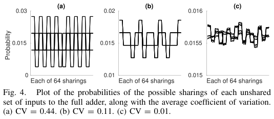
4.3 位串行累加器：MSB 首拍的“随机 0 共享”（论文 Fig.5）
累加也用进位保存（两个阶段、正负时钟沿各完成一次，1 周期内完成位归约）。问题是：计算激活 MSB 的第一次累加时，上一累加值要清零——但“把共享秘密与已知 0 相加”不安全（0 不是均匀共享）：
- 能直接赋值的地方直接赋值；
- 7 个含重置 0 的全加器：常规做法需要 14 个运行期随机比特表示共享 0（s1=r1, s2=r2, s3=r1⊕r2）；
- 本论文（借鉴 [53]）：复用上一次累加器的 2 份来构造随机 0 的共享 → 只需要芯片启动时的一次性随机比特，运行期零随机比特。
用功能蒙特卡洛仿真验证不同激活/权重偏差、不同权重更新频率下的联合均匀性。
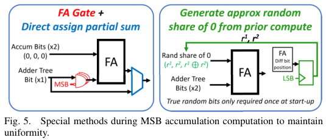
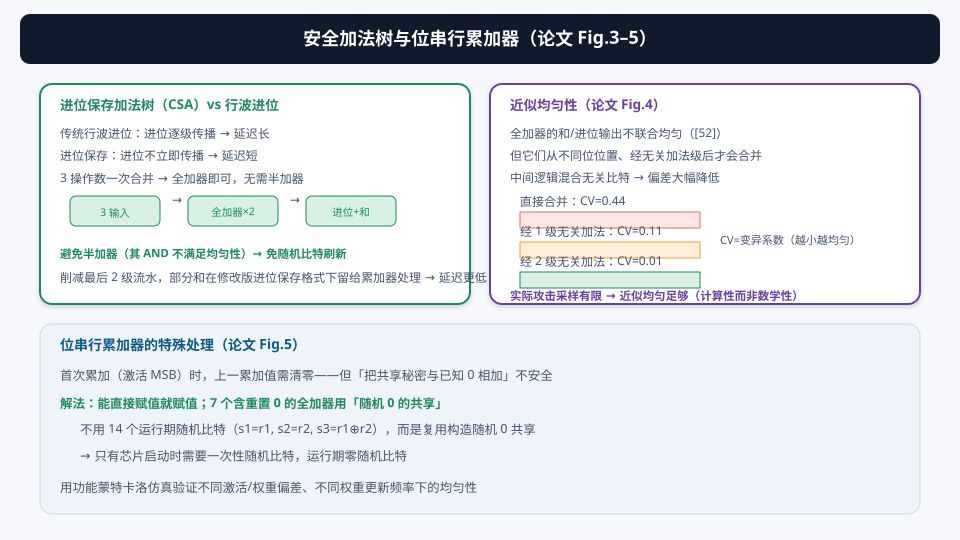
① CSA 免半加器 → 免随机刷新；② 和/进位经无关加法级后近似均匀（CV→0.01）；③ MSB 首拍用“复用式随机 0 共享”→ 只有启动一次性随机比特。整条计算链保持“运行期零随机比特”。
§5创新②：ASCON 轻量密码做片上模型解密
理解：① 为什么片外权重必须加密；② 为什么选 ASCON（NIST 轻量密码冠军）；③ TI-ASCON 怎么只用 4 个一次性随机比特实现 SCA 安全。
5.1 为什么必须加密片外权重？
片上 SCA 保护对“直接探针测量 DRAM↔ASIC 总线”无效——权重在片外必须以密文存储，片上解密后才能计算。密码学提供数学保证，但前提是：
- 有秘密密钥（§6 的 PUF 解决）；
- 密码实现本身SCA 安全（解密过程不能泄露）；
- 面积/功耗开销不能大（密码只是配角）。
5.2 为什么选 ASCON？
ASCON 是 NIST 轻量密码竞赛冠军（2023），原因：
- 面积/能耗效率经过充分验证；
- 轻量密码中 AND 门占比最低——AND 的 Boolean 共享开销最大（§3 讲过），其余 NOT/XOR/rotate 都是线性操作，可对每份独立计算、开销极小；
- SCA 弹性好：猜中密码状态不直接导致恢复密钥 → 无法破解未来解密操作。
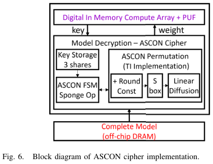
5.3 TI-ASCON：只用 4 个一次性随机比特
ASCON 置换的基础非线性步与 Keccak 相同 → 直接用 Daemen 的 "Changing of the Guards" 方法（原用于 Keccak）：
- 用状态内的各种比特互相 remask → 在非线性置换中保持均匀性；
- 操作开始时只需 4 个外部随机比特，运行期零随机比特；
- → 低开销的阈值实现（TI）ASCON。
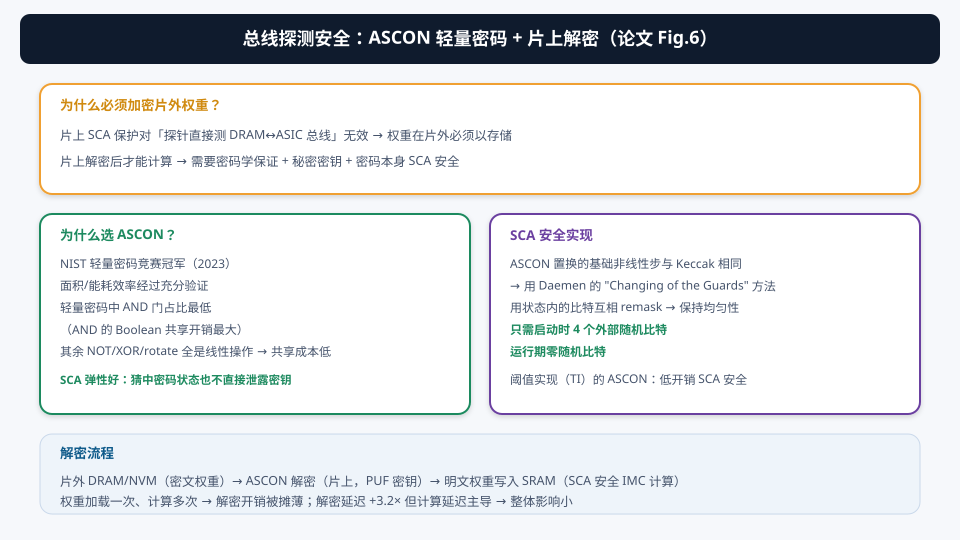
5.4 解密流程与开销
- 片外 DRAM/NVM 存密文权重 → 总线被窃听也只能得到密文；
- ASCON 解密（片上，用 PUF 密钥）→ 明文权重；
- 明文权重写入 SRAM → SCA 安全 IMC 计算。
IMC 的权重加载一次、计算多次（最大化数据复用）→ 解密操作很少发生 → 功耗与延迟开销被摊薄。解密延迟 +3.2×，但计算延迟主导典型模型 → 整体影响小。
§6创新③：复用 IMC SRAM 的 PUF 密钥生成
理解：① 为什么密钥必须片上生成（片外传入会被探测、e-fuse 会被 SEM 读出）；② 反馈切断怎么把 SRAM 单元变成 PUF；③ TMV 抗噪、差分 FSM 抗功耗分析、NIST 随机性验证。
6.1 密钥为什么必须“长在芯片里”？
- 密钥从片外读入 → 传输可被探测 → 密码安全性归零；
- e-fuse 熔丝 → SEM 成像可读出每个熔丝状态；
- PUF（物理不可克隆函数）：利用制造工艺的随机失配生成密钥——制造测试时收集挑战-响应对，部署时评估 PUF 得到密钥，外部观察者无法测量。
6.2 复用 IMC SRAM 单元做 PUF（论文 Fig.7）
大 PUF 存储阵列是显著面积开销。本论文复用 IMC 的 SRAM 单元：SCA 安全位单元（[71]）已含反馈切断晶体管，正好用来暴露制造失配：
- 切断反馈；
- 预放电两个分离反相器的输入；
- 重连反馈 → SRAM 按哪个反相器更强（制造失配）沉降到 0 或 1；
- 标准 SRAM 读操作读出 → PUF 位。
只有特定字线的既有数据被擦除（可子分字线最小化）→ 抗噪声、低开销、可随时按需生成可靠密钥。只需一小块综合数字逻辑（FSM），几乎零面积开销。
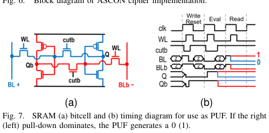
6.3 位单元布局细节
- 3 个共享垂直堆叠成一组 → 3 条差分位线在单元宽度内垂直走线，每对走不同金属层（减小共享间耦合、不增单元面积）；
- 每个位单元紧邻定制 XNOR 乘法门（水平连接激活驱动与局部内部节点）。
6.4 抗噪与抗攻击
- 时间多数投票（TMV）：同一位单元多次评估取多数 → 抗噪声；次数可配置（按用例设鲁棒性）；
- 差分 FSM 操作：TMV 的 FSM 处理 4 位一组时会泄露统计信息（如看到 11 次计数增加就知道 3 位是 1）→ 感放输出的差分值都给 FSM → 恒定翻转活动 → 结合 Boolean 共享，密钥生成对 SCA 安全；
- 随机性：NIST 800-22 适用测试全过（5 芯片 p>0.01），最小熵 ~0.91–0.93，Von Neumann 去偏；
- 稳定性：TMV 提高稳定度 + 片外 BCH 纠错 → 0% 位错误率；intra-key HD≈0（稳定）、inter-key HD≈192（半位宽，唯一）；掩蔽不稳定单元可减少纠错位；
- 老化：NBTI 老化通常影响 SRAM PUF，但正常运行时权重近似随机 → 交替老化部分抵消；烧灼硬化（burn-in）可进一步增强。
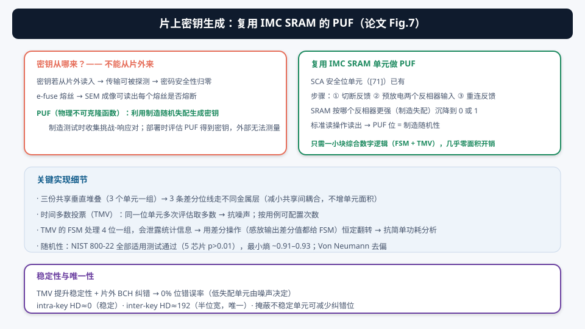
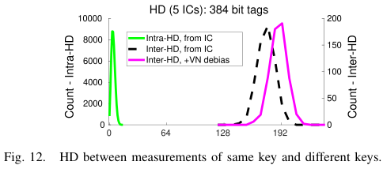
① 密钥必须片上生成（PUF）；② 反馈切断复用 IMC SRAM 单元（几乎零面积）；③ TMV 抗噪、差分 FSM 抗功耗分析、NIST 随机性全过、0% 误码、intra/inter HD 验证稳定且唯一。
§7安全评估：CPA 与 DPA 证明
理解：① CPA（相关功耗分析）和 DPA（差分功耗分析）怎么攻击、怎么判读结果；② Chip Whisperer 平台为什么能给出“理想高 SNR”的严格测试；③ 结果：100 万采样不可攻破。
7.1 测试平台：Chip Whisperer CW305
独立数字电路逐个实现在 Chip Whisperer FPGA 平台上（论文 Fig.8b）：把独立流水级（甚至单级子部分）分开实现和攻击 → 最小化背景切换 → 最大化攻击者 SNR。如果在理想测试下仍安全，真实场景（并行操作 + 无关活动降低 SNR）只会更安全。由于 Boolean 共享是算法性的，FPGA 上的安全结论同样适用于定制 IC；功耗 SCA 安全直接转化为 EM SCA 安全（共享计算空间太近，EM 探针无法分辨）。
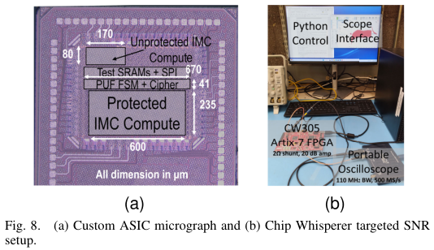
7.2 CPA：相关功耗分析（论文 Fig.9/10）
CPA 模拟真实攻击：攻击者控制一个变化输入（激活）、试图恢复固定秘密（权重）。对每个密钥猜测计算与功耗测量的相关性：
- 未保护（Fig.10）：正确密钥（红）相关性显著高于错误猜测（灰）→ 一击即中；
- 保护后（Fig.9a）：乘法+加法树各流水级子块中，正确密钥与错误猜测不可区分；累加器两级流水（Fig.9b）同样安全；
- ASCON 密码（Fig.9c，固定密钥+变化 nonce，在初始化阶段密钥与状态结合处分析）：正确密钥不可区分。
权重在 IMC SRAM 中静止 → 攻击全程共享方式不变；激活实时流入 → 每个样本重新共享（更严格）。
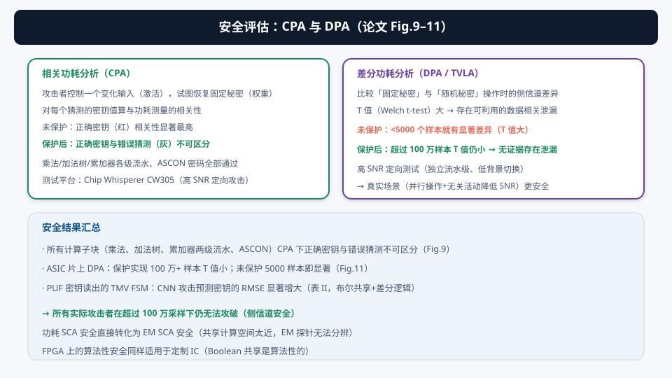
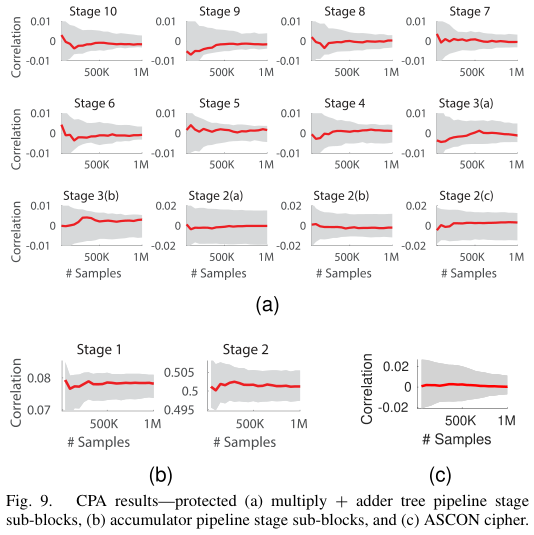
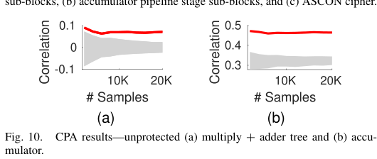
7.3 DPA/TVLA：差分功耗分析（论文 Fig.11）
DPA 测试算法性安全保证：比较电路处理固定秘密与随机秘密时的侧信道是否有统计显著差异（Welch t-test 的 T 值）：
- 未保护：<5000 个样本就有显著差异（T 值大）→ 可利用的数据相关泄漏存在；
- 保护后：超过 100 万样本 T 值仍小 → 没有理由认为存在可利用的侧信道差异。
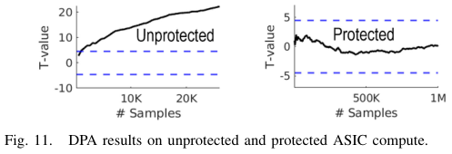
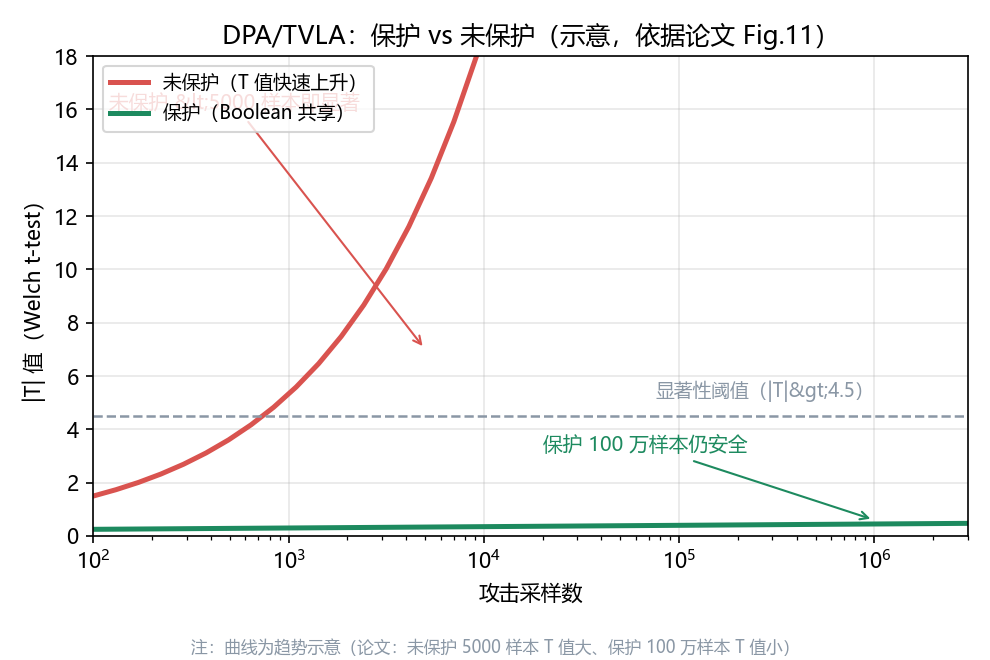
7.4 PUF 密钥读出的 SCA 安全（表 II）
用 CNN 攻击尝试从 TMV SCA 重建密钥（先前工作证明 CNN 对 SCA 有高精度）：
- 对 Boolean 共享密钥（3 份），考虑猜测非共享与共享密钥值的 RMS 误差；
- 加 Boolean 共享 + 差分逻辑后，猜密钥难度显著增大。
① CPA：保护后正确密钥与错误猜测不可区分（计算各块 + ASCON）；② DPA/TVLA：保护后 100 万采样 T 值仍小；③ CNN 攻击猜密钥 RMSE 显著增大；④ 高 SNR 理想测试 → 真实场景更安全。
§8性能、安全开销与可扩展性
理解：① 8.1 TOPS/W 与吞吐；② 安全开销花在哪（位单元 ×5.3、加法树 ×15.5）；③ 多宏并行怎么扩展、解密开销怎么控制。
8.1 宏性能（表 V）
14nm CMOS 流片（论文 Fig.8a），0.55V/80MHz 下：
- 保护版最高能效 8.1 TOPS/W（0.50V）；
- 频率上限 100 MHz（测试环境同步通信 + FPGA 数据输入的 setup 限制）；
- 吞吐反而更高：Boolean 共享的非完备性要求加法树/累加器流水化 → 流水线提升吞吐（未保护版若也流水会有类似提升，代价是少量面积）；
- 延迟：模型解密使权重加载延迟 +3.2×，但计算延迟主导典型模型 → 整体影响不大。
8.2 安全开销（论文 Fig.13）
| 组件 | 开销 | 原因 |
|---|---|---|
| 位单元 + 乘法列 | 面积 ×5.3 | 每单元拆 3 份共享 + 2 个 PUF 反馈切断晶体管 |
| 全加器 | 面积 ×14.2 | 共享后的全加器（主要开销来源） |
| 加法树 | 面积 ×15.5 | 加法树是数字 IMC 的主导组件 |
| 加法器 + 累加器 | 面积效率 −6.4× | — |
与先前工作 [30] 一致（乘法器面积效率 −6.1×、能效 −5.7×）——安全不能免费，但本论文的优化避免了更高开销（免随机比特、XNOR 简化、CSA 免半加器）。
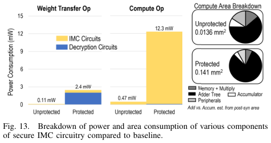
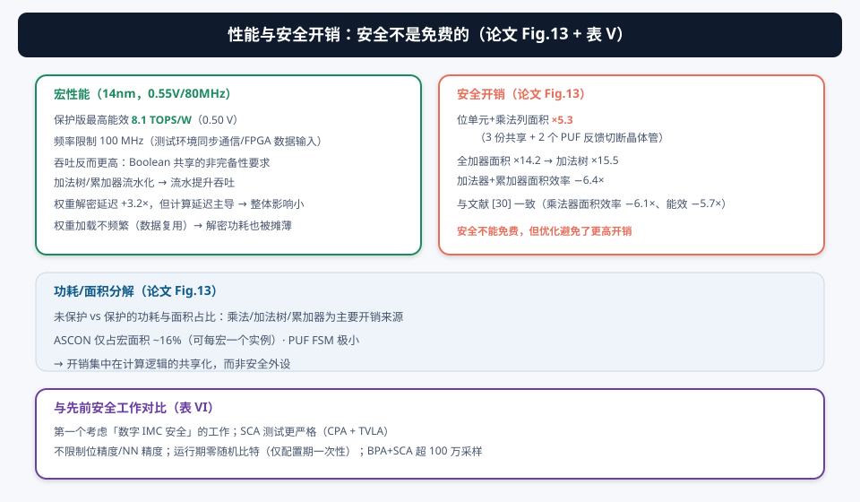
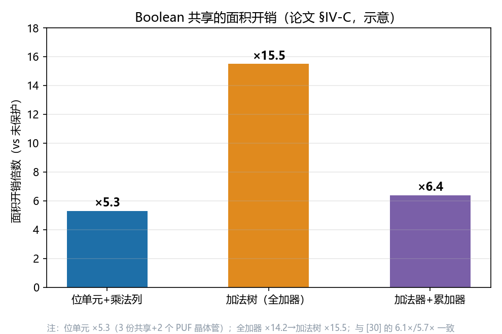
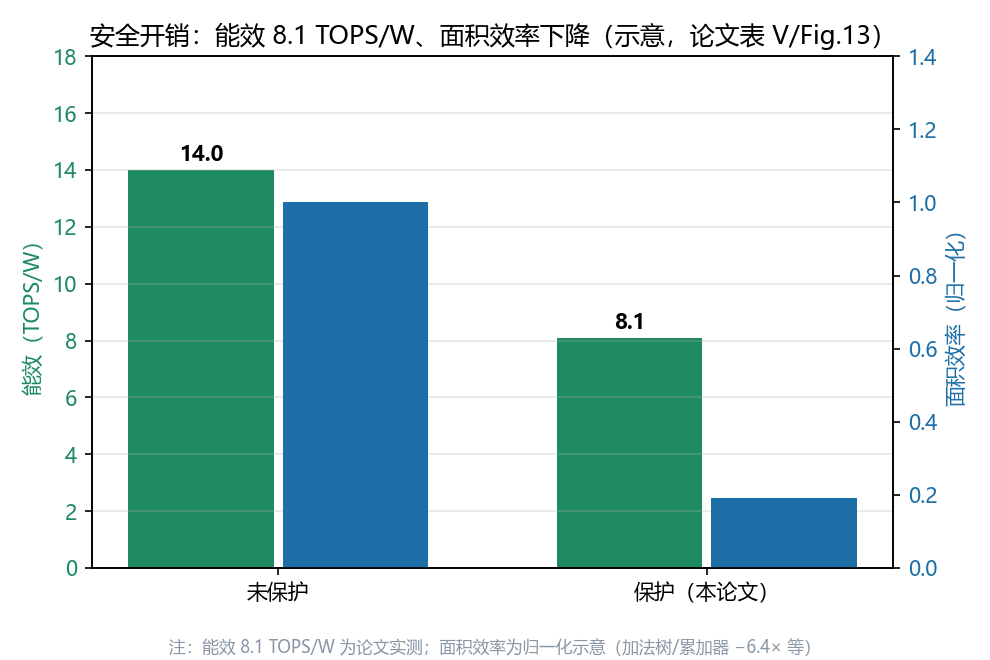
8.3 与先前安全工作对比（表 VI）
- 第一个考虑数字 IMC 安全的工作；
- SCA 测试更严格：CPA + TVLA（先前的 IMC 安全工作未做）；
- 不限制位精度、不影响 NN 精度；
- 运行期零随机比特（仅配置期一次性）——IMC 安全的硬约束，本论文完全满足；
- 高 SNR 理想攻击下 BPA+SCA 超 100 万采样 → 真实场景安全期显著更长。
8.4 可扩展性（论文 §IV-D）
- 多宏并行（类似 chiplet）：各宏独立安全计算，安全协处理器合并共享输出；并行宏多 → 攻击者更难从总功耗分辨 → 安全等级可放宽（用更少的安全门）；
- 解密扩展：ASCON-128a（8 周期 128 位数据块）或每宏一个 ASCON 实例（仅占宏面积 16%）→ 解密延迟不成为瓶颈；
- PUF 扩展：内存增大 → 更多 PUF 位 → 可做裁剪/掩蔽选最优单元；可单密钥（各宏 PUF 组合）或每 ASCON 实例独立密钥。
① 8.1 TOPS/W、吞吐因流水而更高、解密开销被摊薄；② 安全开销集中在计算共享化（位单元 ×5.3、加法树 ×15.5），安全外设（ASCON 16%、PUF 极小）占比小；③ 多宏并行可放宽安全等级、解密/PUF 按需扩展。
§9总结 · 未来研究方向 · 术语表 · 参考资料
9.0 全文总结：给 IMC 穿上“安全外衣”
把整篇论文串成一句话：IMC 的功耗泄露数据、总线泄露模型 → 用 Boolean 共享让功耗与数据无关（XNOR 原生安全免随机比特）→ 用 ASCON 把片外权重锁成密文 → 用 PUF 在芯片里“长”出密钥。逻辑链：
- 威胁：SCA（功耗/EM 泄露输入隐私）、BPA（总线窃听泄露模型 IP）（§1）；
- 基础：Boolean 共享（3 份、正确性/非完备性/均匀性），但 IMC 不能要运行期随机比特（§2）；
- 创新① 计算安全：XNOR 线性乘法（6 门+0 随机比特）+ SV/BV 换算保持多位精度 + CSA 加法树（免半加器）+ 复用式随机 0 共享（§3–4）；
- 创新② 模型安全：ASCON 轻量密码（NIST 冠军、AND 最少）片上解密，TI 实现仅 4 个一次性随机比特（§5）；
- 创新③ 密钥安全：SRAM PUF（反馈切断）复用 IMC 单元，TMV 抗噪 + 差分 FSM 抗攻击（§6）；
- 闭环验证：CPA/DPA 超 100 万采样安全、8.1 TOPS/W、NN 精度零影响（§7–8）。
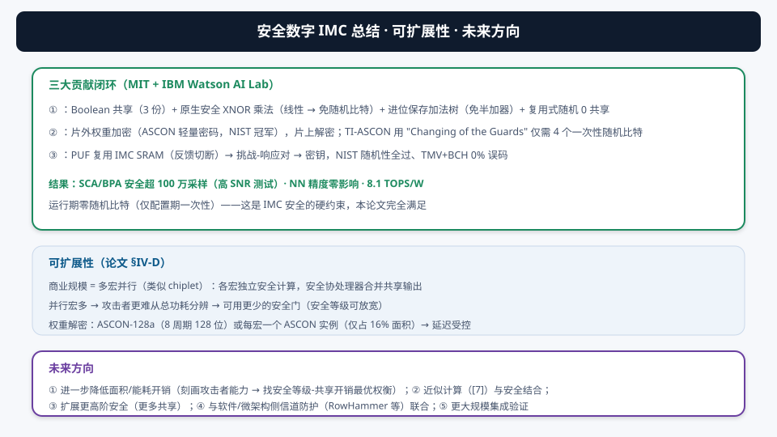
- 强：① 选题稀缺——CIM 安全是空白领域，本文是第一篇数字 IMC 安全；② 约束明确（零随机比特）且全篇每个设计都服从它，逻辑自洽；③ 数学功底扎实（SV/BV 校正因子证明、均匀性分析）；④ 测试严格（CPA+TVLA、高 SNR 平台、100 万采样）；⑤ PUF 复用 IMC 电路是聪明的面积优化。
- 弱/局限：① 8.1 TOPS/W 远低于无安全 IMC（安全开销巨大：加法树 ×15.5）；② 只演示小宏（8 列×128 行），商用规模靠推断；③ 一阶安全假设（攻击者限一阶）；④ 未覆盖故障注入/软件侧信道等攻击面（作者声明了范围外）；⑤ PUF 的 BCH 纠错需片外支持。
9.1未来研究方向
- 降低安全开销：刻画攻击者真实能力 → 找“安全等级-共享开销”最优权衡点（并行宏多时可放宽）；与近似计算（[7]）结合进一步省能耗；
- 更高阶安全：更多共享 + 更复杂的共享函数 → 二阶/三阶安全（当前一阶）；
- 覆盖更多攻击面：与 RowHammer 防护、故障注入检测、软件/微架构侧信道防护联合（论文明确留作平行工作）；
- PUF 增强：暗比特掩蔽（减少 TMV/BCH 开销）、烧灼硬化、随机性提取最大化每比特熵、对称布局减小系统偏差；
- 大规模集成：多宏系统级验证（安全协处理器合并、ASCON-128a 或每宏实例、密钥管理策略）；
- 隐私计算扩展：把安全 IMC 与联邦学习/同态加密外包推理结合——安全硬件是隐私计算栈的关键底座。
9.2术语表
| 术语 | 解释 |
|---|---|
| SCA（Side-Channel Attack） | 侧信道攻击：利用功耗/电磁等物理泄露重建数据。 |
| BPA（Bus-Probing Attack） | 总线探测攻击：窃听片外存储器与芯片间的总线获取模型。 |
| Boolean 共享（掩码） | 把每个比特拆成 n 份（XOR 恢复），单份看似随机。 |
| TI（Threshold Implementation） | 阈值实现：满足正确性/非完备性/均匀性的布尔共享。 |
| 非完备性（Non-Completeness） | 每个子函数只用输入份的严格子集，子电路碰不到完整秘密。 |
| 均匀性（Uniformity） | 共享表示分布均匀，无数据相关偏差可被利用。 |
| 近似均匀性 | 本文放宽的均匀性：只要求计算性（非数学性）安全。 |
| XNOR 乘法 | 用线性 XNOR 门做 ±1 乘法，共享后原生安全、免随机比特。 |
| SV / BV | 有符号值（±1 加权和，只取奇数）/ 二进制值（计算表示）。 |
| 校正因子 | 把 XNOR-MAC 原始输出换算成真实 MAC 值的常数项（可预计算）。 |
| CSA（Carry-Save Adder） | 进位保存加法：进位不立即传播，3 操作数合并免半加器。 |
| ASCON | NIST 轻量密码竞赛冠军，用于片上模型解密。 |
| Changing of the Guards | Daemen 提出的 Keccak/ASCON 置换 remask 方法（仅需 4 个一次性随机比特）。 |
| PUF（Physically Unclonable Function） | 物理不可克隆函数：制造失配生成芯片唯一密钥。 |
| 反馈切断 | 切断 SRAM 反相器反馈 → 暴露制造失配 → 读出 PUF 位。 |
| TMV（Temporal Majority Voting） | 时间多数投票：多次评估取多数，抗噪声。 |
| CPA（Correlation Power Analysis） | 相关功耗分析：对密钥猜测算与功耗的相关性。 |
| DPA / TVLA | 差分功耗分析 / 测试向量泄漏评估（Welch t-test）。 |
| Chip Whisperer | 侧信道攻击/防御研究平台（高 SNR 测量）。 |
| TOPS/W | 每瓦每秒万亿次运算，能效单位。 |
9.3参考资料
- 本论文：M. Ashok et al., “Digital In-Memory Compute for Machine Learning Applications With Input and Model Security,” IEEE JSSC, vol. 60, no. 9, pp. 3390–3400, Sep. 2025. DOI: 10.1109/JSSC.2025.3534753
- [5] 基线数字 IMC 架构（位串行 1–8 bit 激活、4 的倍数权重精度、8 列×128 行 4-bit 权重、XNOR 乘法门 + 加法树 + 累加器）。
- [30] Maji et al.：阈值实现（TI）的传统加速器 SCA 保护（移位乘法、幂次权重限制、需恒定随机比特）。
- [31] Fang et al.：经验性 SCA 保护（时间/空间洗牌 + DAC 功耗补偿）。
- [58] ASCON：NIST 轻量密码竞赛冠军。
- [53] Daemen：Keccak/ASCON 置换的 "Changing of the Guards" remask 方法。
- [71] SCA 安全 SRAM 位单元（反馈切断晶体管，本论文复用作 PUF）。
- [7] 高位激活 + 二值权重的 XNOR 表示法（本论文 SV/BV 方法的来源）。
想深入的学生：① 先读 TI 原始论文（Nikova et al.）理解阈值实现的数学；② 读 ASCON 规范与 "Changing of the Guards" 论文；③ 动手：用 Python 实现 3 份 Boolean 共享的 AND/XNOR 门，统计共享输出的均匀性（复现 CV 的概念）；④ 用 Chip Whisperer 开源平台跑一次 CPA 攻击实验，直观感受“功耗=数据影子”；⑤ 与本系列第 9 篇（混合 SNN-CNN）对比：那条路防“算法泄露”，这条路防“物理泄露”——两种安全观。